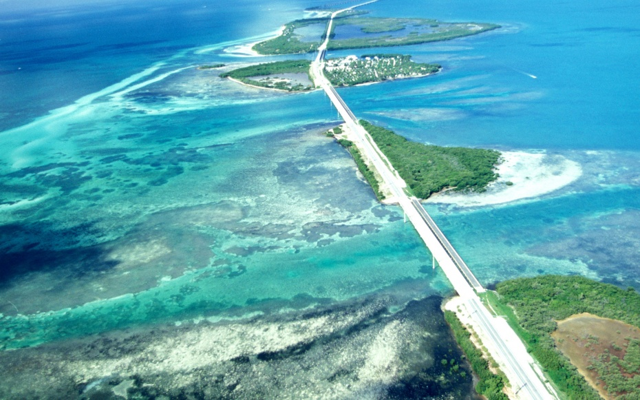
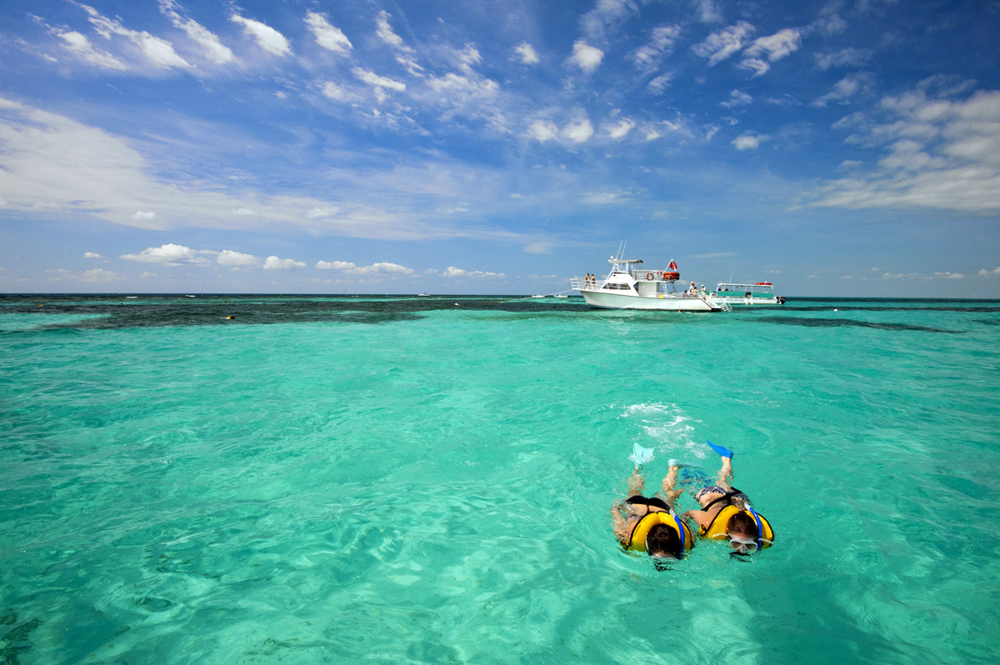

Another thing to do from Miami is a day trip to Key West. This island is the southernmost point of the USA and is known for the many water sports you can try out, the beaches and the historical sites you can visit. Key West’s old town with its special architectural structures is one of Key West’s biggest attractions. One of the most fascinating excursions in Florida is a ride with the conch train that brings you along all of Key West’s top sights. It’s the perfect way to experience the Caribbean atmosphere of the Florida Keys.
 